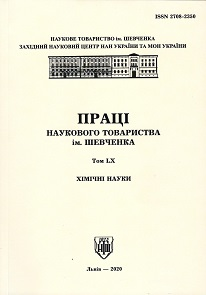

PROCEEDINGS OF THE SHEVCHENKO SCIENTIFIC SOCIETY
Year of Foundation: 1897
Certificate of state registration: КВ No 16781-5353Р dated May 21, 2010
ISSN: 2708-2350
Scientific Journal Cluster: Chemistry, Chemical Technology, and Pharmacy
Field of Study: E3 Chemistry
The journal "Proceedings of the Shevchenko Scientific Society. Chemical Sciences" is a publication dedicated to highlighting and disseminating the achievements of domestic and international authors on current scientific and practical issues in chemistry, including interdisciplinary topics. The journal publishes the results of original experimental research, reviews on fundamental and applied issues in the chemical sciences, as well as critical reviews of new publications in the field of chemistry (monographs and textbooks). The journal has been published since 1897 (as the “Collection of the Mathematical, Natural History, and Medical Section of the Shevchenko Scientific Society” (1897–1939)) and was the first Ukrainian scientific journal focused on the natural sciences and mathematics. In 1997, the publication was revived with the separation of issues dedicated to chemical sciences and the granting of specialized status in this field of knowledge. Since 2020, the journal “PROCEEDINGS OF THE SHEVCHENKO SCIENTIFIC SOCIETY: CHEMICAL SCIENCES” has been included in the scientometric database Index Copernicus International World of Journals, and its articles are indexed by the scientometric database Index Copernicus International Journals Master List. Since June 29, 2021, the “Chemical Sciences” Series has been included in the list of Ukrainian professional publications in Category “B.” The collection is distributed according to the mandatory distribution list for periodicals, which includes the V. I. Vernadsky National Library of Ukraine, as well as libraries of universities and leading institutions of the National Academy of Sciences of Ukraine.
Founders: SHEVCHENKO SCIENTIFIC SOCIETY WESTERN SCIENTIFIC CENTER of the National Academy of Sciences of Ukraine and Ministry of Education and Science of Ukraine
Chairman of the Publishing Council:
Roman KUSHNIR academician of the NAS of Ukraine, DSc., professor, the Head of the
Shevchenko Scientific Society (Ya. S. Pidstryhach Institute for Applied Problems of Mechanics and
Mathematics of the National Academy of Sciences of Ukraine, Lviv, UKRAINE)
Vice-Chairmans of the Publishing Council:
Roman GLADYSHEVSKII academician of the NAS of Ukraine, DSc., professor (Ivan Franko National
University of Lviv, Lviv, UKRAINE)
Rostyslav STOIKA corresponding member of the NAS of Ukraine, DSc., professor (Institute of Cell
Biology of the National Academy of Sciences of Ukraine, Lviv, UKRAINE)
Editor-in-Chief:
Oleksandr RESHETNYAK DSc., professor (Ivan Franko National University of Lviv, Lviv, UKRAINE)
Deputy Editors-in-Chief:
Lidiya BOICHYSHYN DSc., professor (Ivan Franko National University of Lviv, Lviv, UKRAINE)
Editorial board (in alphabetical order):
Olena AKSIMENTYEVA DSc., professor (Ivan Franko National University of Lviv, Lviv, UKRAINE)
Liliya BAZYLYAK CSc., senior researcher (Department of Physical Chemistry of Fossil Fuels of the L. M. Lytvynenko Institute of Physical-Organic Chemistry and Coal Chemistry of the National Academy of Sciences of Ukraine, Lviv, UKRAINE)
Grygoriy DMYTRIV DSc., professor (Ivan Franko National University of Lviv, Lviv, UKRAINE)
Liliya DUBENSKA CSc., associate professor (Ivan Franko National University of Lviv, Lviv, UKRAINE)
Томаsz GORYCZKA Dr. habil., professor (University of Silesia in Katowice, Chorzów, POLAND)
Małgorzata Anna KAROLUS Dr. habil., associate professor (University of Silesia in Katowice, Chorzów, POLAND)
Yaroslav KHIMYAK PhD, professor (University of East Anglia, Norwich, UNITED KINGDOM)
Myroslav KHOMA corresponding member of the NAS of Ukraine, DSc., professor (Karpenko Physico-Mechanical Institute of the National Academy of Sciences of Ukraine, Lviv, UKRAINE)
Orest KUNTYI DSc., professor (Lviv Polytechnic National University, Lviv, UKRAINE)
Andriy KYTSYA , senior researcher (Department of Physical Chemistry of Fossil Fuels of the L. M. Lytvynenko Institute of Physical-Organic Chemistry and Coal Chemistry of the National Academy of Sciences of Ukraine, Lviv, UKRAINE)
Оleh МАRCHUК DSc., professor (Lesya Ukrainka Volyn National University, Lutsk, UKRAINE)
Web of Science Researcher ІD AAQ-1923-2020
ORCID ID 0000-0002-5618-7156
Dmytro NYKYPANCHUK PhD (Brookhaven National Laboratory, Upton, NY, USA)
Web of Science Researcher ІD PWF-5306-2026
ORCID ID 0000-0002-0461-3467
Pavlо SHAPOVAL DSc., professor (Lviv Polytechnic National University, Lviv, UKRAINE)
Web of Science Researcher ІD ABA-2139-2021
ORCID ID 0000-0001-5807-0130
Web of Science Researcher ІD ABC-7860-2020
ORCID ID 0000-0002-3811-7138
Fiseha TESFAYE PhD, adjunct professor (Åbo Akademi University, Turku, Finland)
Ihor ZAVALIY academician of the NAS of Ukraine, DSc., professor (Karpenko Physico-Mechanical Institute of the National Academy of Sciences of Ukraine, Lviv, UKRAINE)
Ondřej ŽIVOTSKÝ PhD, professor (University of Mining and Metallurgy – Technical University of Ostrava, Ostrava, Czech Republic)
Технічний редактор:
Анатолій ЗЕЛІНСЬКИЙ к.х.н. (Львівський національний університет імені Івана Франка, м. Львів, УКРАЇНА)